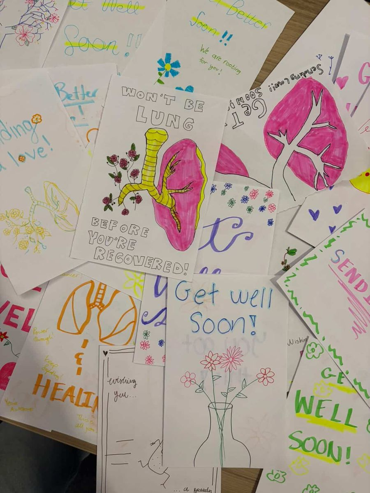

Pulmonary Fibrosis: Understanding Lung Scarring and the New Wave of Treatment
A Look at Causes, Mechanisms, and Emerging Therapies

Pulmonary fibrosis is a disease in which lung tissue becomes thick, stiff, and scarred over time. As scar tissue builds up, the lungs lose their normal elasticity, making it progressively harder for oxygen to pass into the bloodstream. Unlike many respiratory conditions that can be managed or reversed, pulmonary fibrosis is largely irreversible, and its average survival time after diagnosis has historically been only a few years. For decades, treatment options were extremely limited, but the past year has brought the field's first genuinely new therapy in over a decade, making pulmonary fibrosis a timely topic for anyone interested in respiratory medicine.
Background and Mechanism
Pulmonary fibrosis can be idiopathic, meaning it has no identifiable cause, or it can result from environmental exposures, certain medications, or underlying autoimmune and interstitial lung diseases. When lung tissue is repeatedly injured, whether from inhaled toxins, infection, or unknown triggers, the body attempts to repair the damage. In pulmonary fibrosis, this repair process becomes dysregulated. Fibroblasts, the cells responsible for producing connective tissue, become overactive and deposit excessive amounts of collagen and other structural proteins into the lung. Alveolar epithelial cells are damaged, inflammatory cells and chemokines accumulate, and normal lung architecture is gradually replaced with dense, stiff scar tissue. The result is a lung that can no longer expand and contract efficiently, leading to shortness of breath, chronic cough, and declining blood oxygen levels.
The most studied form of this disease is idiopathic pulmonary fibrosis (IPF), where the underlying cause of injury remains unknown despite decades of research. A related condition, progressive pulmonary fibrosis (PPF), develops when an existing interstitial lung disease, such as an autoimmune condition or hypersensitivity pneumonitis, worsens over time and begins to closely resemble IPF in its rate of decline. PPF affects an estimated 5.6 million people worldwide and up to 100,000 people in the United States, and it is frequently underdiagnosed, with diagnosis often delayed by up to two years.
Diagnosis and Traditional Treatment
Diagnosing pulmonary fibrosis typically involves imaging studies to detect patterns of scarring, along with lung function tests measuring forced vital capacity, a key indicator of how much air the lungs can hold and expel. For years, the only approved treatments for IPF were pirfenidone and nintedanib, two antifibrotic drugs that can slow disease progression but cannot stop or reverse it. Both drugs are also associated with significant side effects, and discontinuation due to poor tolerability has been common, leaving many patients searching for better options.
A New Era of Treatment
In October 2025, the FDA approved nerandomilast, sold under the brand name Jascayd, marking the first new IPF therapy in more than ten years. Nerandomilast works differently from earlier antifibrotic drugs. It selectively inhibits an enzyme called phosphodiesterase 4B (PDE4B), which increases levels of a signaling molecule called cyclic AMP inside lung cells. Elevated cyclic AMP suppresses the production of pro-inflammatory and pro-fibrotic proteins, reducing both inflammation and the overactive scarring process at the cellular level. In large clinical trials involving over a thousand patients, nerandomilast significantly slowed the decline in forced vital capacity compared to placebo, with a favorable safety profile and low rates of treatment discontinuation. Just two months later, in December 2025, the FDA extended approval to cover progressive pulmonary fibrosis as well, giving patients with either form of the disease a new option beyond the older antifibrotic drugs.
Researchers are also exploring why some forms of lung scarring resolve on their own while others do not. Recent work comparing pulmonary fibrosis that develops after severe COVID-19 infection to idiopathic pulmonary fibrosis found that post-COVID lung scarring often improves over time, while IPF almost always continues to progress. Investigators are now studying the immune differences between these two patterns in hopes of identifying factors that could be used to help non-resolving fibrosis behave more like the resolving form.
Vulnerable and Affected Populations
Pulmonary fibrosis is more common in older adults, particularly those over 60, and IPF occurs more frequently in men than in women. People with a history of smoking, occupational exposure to dust, asbestos, or silica, or certain autoimmune conditions face elevated risk. Because early symptoms such as mild breathlessness and cough are easy to dismiss, many patients are not diagnosed until the disease has already caused substantial lung damage, making early recognition and specialist referral an important area of ongoing public health focus.
Conclusion
Pulmonary fibrosis represents one of the more severe outcomes of lung tissue injury, marked by progressive, largely irreversible scarring that steadily limits breathing capacity. While the disease remains incurable, the approval of nerandomilast for both idiopathic and progressive pulmonary fibrosis marks a genuine turning point after years of limited options, and ongoing research into why some fibrosis resolves while other forms progress may open further avenues for treatment. Continued investment in early diagnosis, novel antifibrotic mechanisms, and a deeper understanding of the disease's underlying biology will be essential to improving outcomes for the millions of people affected worldwide.
References
- Boehringer Ingelheim. (2025, October 8). FDA approves JASCAYD® (nerandomilast) as first new treatment option for adults with IPF in over a decade. https://www.boehringer-ingelheim.com/human-health/lung-diseases/pulmonary-fibrosis/fda-approves-jascayd-nerandomilast-first-new-treatment-ipf-over-decade
- Cleveland Clinic. (2025, May 5). Pulmonary fibrosis: Causes, symptoms & treatment. https://my.clevelandclinic.org/health/diseases/10959-pulmonary-fibrosis
- Cui, J. (2025). Current understanding of pulmonary fibrosis: Pathogenesis, diagnosis, and therapeutic approaches. Canadian Respiratory Journal, 2025, Article 3183241. https://doi.org/10.1155/carj/3183241
- Michigan Medicine. (2025, December 19). New hope for patients with idiopathic pulmonary fibrosis. https://www.michiganmedicine.org/health-lab/new-hope-patients-idiopathic-pulmonary-fibrosis
- Most promising emerging therapies for pulmonary fibrosis: Targeting novel pathways. (2026). PMC. https://pmc.ncbi.nlm.nih.gov/articles/PMC12839304/
- Pulmonary Fibrosis Foundation. (2025, December 22). FDA approves nerandomilast for progressive pulmonary fibrosis. https://www.pulmonaryfibrosis.org/about-us/news-and-media/news/article/2025/12/22/fda-approves-nerandomilast-for-progressive-pulmonary-fibrosis
- USF Health. (2025, January 23). COVID-19 may provide new clues on how to treat deadly lung disease. https://www.usf.edu/health/news/2025/pulmonary-fibrosis.aspx

Start a Chapter or Support Our Work
Start one at your school, fund the next delivery, or bring Project Pulmonary to your department.
Project Pulmonary is a 501(c)(3). Every gift is tax-deductible.